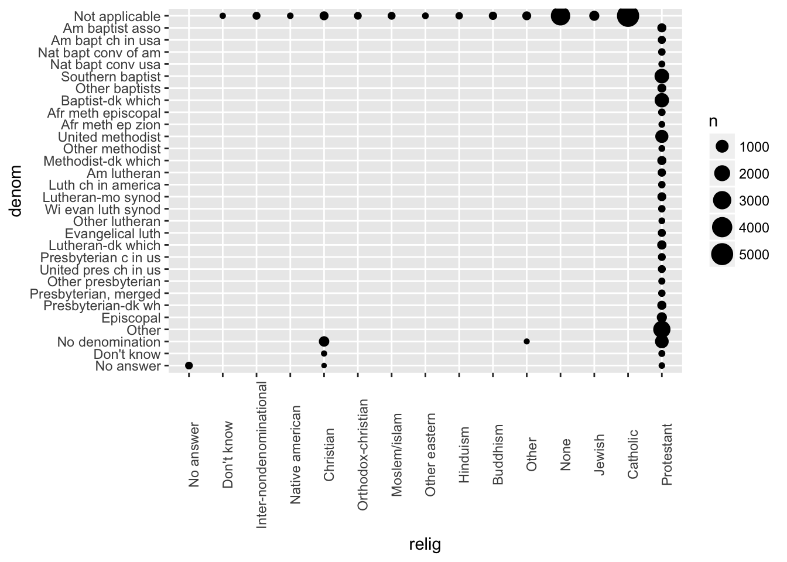
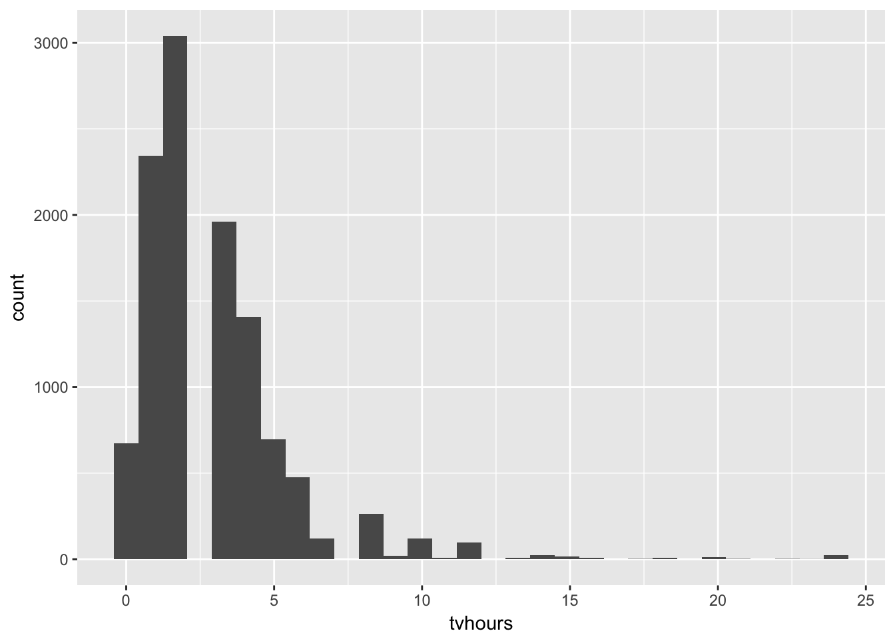

Chapter 15 - Factors
library(tidyverse)
library(forcats)15.3 - General Social Survey
Problem 1
Explore the distribution of rincome (reported income). What makes the default bar chart hard to understand? How could you improve the plot?
There are so many bars that the x-axis labels overlap.
ggplot(gss_cat, aes(rincome)) +
geom_bar()
Let’s rotate the labels.
ggplot(gss_cat, aes(rincome)) +
geom_bar() +
theme(axis.text.x = element_text(angle=90))
Problem 2
What is the most common relig in this survey? What’s the most common partyid?
gss_cat %>%
count(relig) %>%
top_n(1)## # A tibble: 1 x 2
## relig n
## <fct> <int>
## 1 Protestant 10846gss_cat %>%
count(partyid) %>%
top_n(1)## # A tibble: 1 x 2
## partyid n
## <fct> <int>
## 1 Independent 4119Problem 3
Which relig does denom apply to? How can you find out without a table? How can you find out with a vizualization?
denom applies to Protestant.
gss_cat %>%
group_by(denom) %>%
count(relig)## # A tibble: 47 x 3
## # Groups: denom [30]
## denom relig n
## <fct> <fct> <int>
## 1 No answer No answer 93
## 2 No answer Christian 2
## 3 No answer Protestant 22
## 4 Don't know Christian 11
## 5 Don't know Protestant 41
## 6 No denomination Christian 452
## 7 No denomination Other 7
## 8 No denomination Protestant 1224
## 9 Other Protestant 2534
## 10 Episcopal Protestant 397
## # ... with 37 more rowsgss_cat %>%
group_by(relig, denom) %>%
summarize(n = n()) %>%
ggplot(aes(relig, denom, size = n)) +
geom_point() +
theme(axis.text.x=element_text(angle = 90))
15.4 - Modifying factor order
Problem 1
There are some conspicuously high numbers in tvhours. Is the mean a good summary?
Exteme values bias the mean. tvhours is skewed to the right and median may be a better summary statistic.
gss_cat %>%
ggplot(aes(tvhours)) +
geom_histogram()
mean(gss_cat$tvhours, na.rm = TRUE)## [1] 2.980771median(gss_cat$tvhours, na.rm = TRUE)## [1] 2Problem 2
For each factor in gss_cat identify whether the order of the levels is arbitrary or principled.
marital: arbitraryage: principledrace: arbitraryrincome: principledpartyid: arbitraryrelig: arbitrarydenom: arbitrary
Problem 3
Why did moving “Not Applicable” to the front of the levels move it to the bottom of the plot?
Factors are shown in reverse order from top to bottom when coord_flip is used.
gss_cat %>%
mutate(race = fct_relevel(race, "Not applicable")) %>%
ggplot(aes(race)) +
geom_bar() +
coord_flip() +
scale_x_discrete(drop = FALSE)
15.5 - Modifying factor levels
Problem 1
How have the proportions of people identifying as Democrat, Republican, and Independent changed over time?
gss_cat %>%
mutate(partyid = fct_collapse(partyid,
other = c("No answer", "Don't know", "Other party"),
rep = c("Strong republican", "Not str republican"),
ind = c("Ind,near rep", "Independent", "Ind,near dem"),
dem = c("Not str democrat", "Strong democrat"))) %>%
filter(partyid != "other") %>%
ggplot(aes(x = year, ..prop.., fill = partyid)) +
geom_bar(position = "dodge") +
scale_x_continuous(breaks = c(2000, 2002, 2004, 2006, 2008, 2010, 2012, 2014))
Problem 2
How could you collapse rincome into a small set of categories?
gss_cat %>%
mutate(rincome = fct_collapse(rincome,
`More than $10,000` = c("$10000 - 14999", "$15000 - 19999", "$20000 - 24999", "$25000 or more"),
`Less than $10,000` = c("Lt $1000", "$1000 to 2999", "$3000 to 3999", "$4000 to 4999", "$5000 to 5999", "$6000 to 6999", "$7000 to 7999", "$8000 to 9999"))) %>%
mutate(rincome = fct_lump(rincome, n = 3)) %>%
count(rincome, sort = TRUE)## # A tibble: 4 x 2
## rincome n
## <fct> <int>
## 1 More than $10,000 10862
## 2 Not applicable 7043
## 3 Less than $10,000 2153
## 4 Other 1425